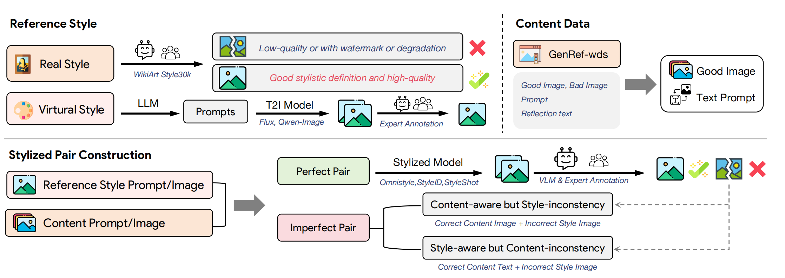
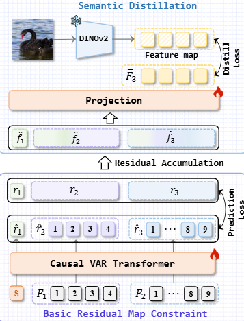
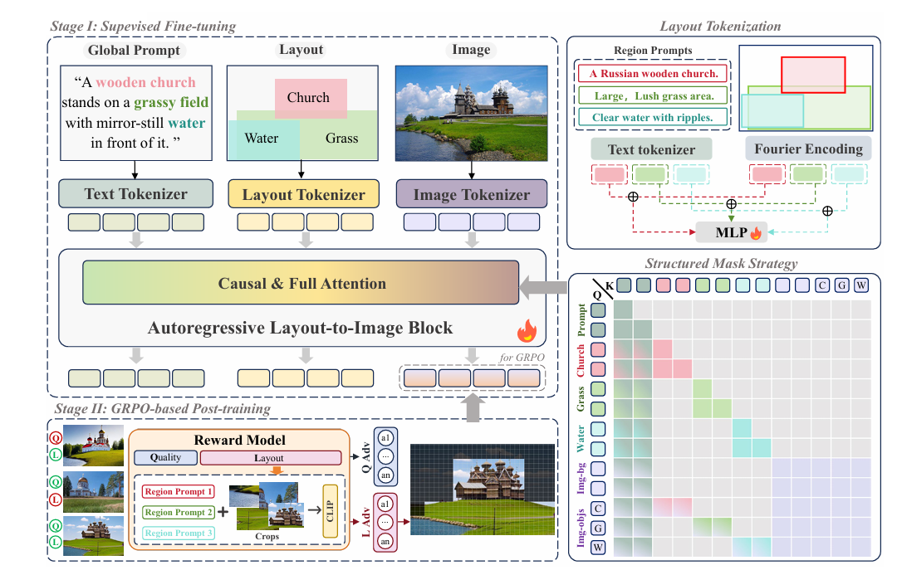
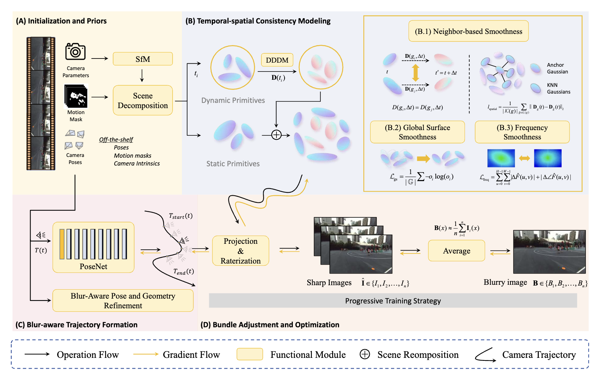
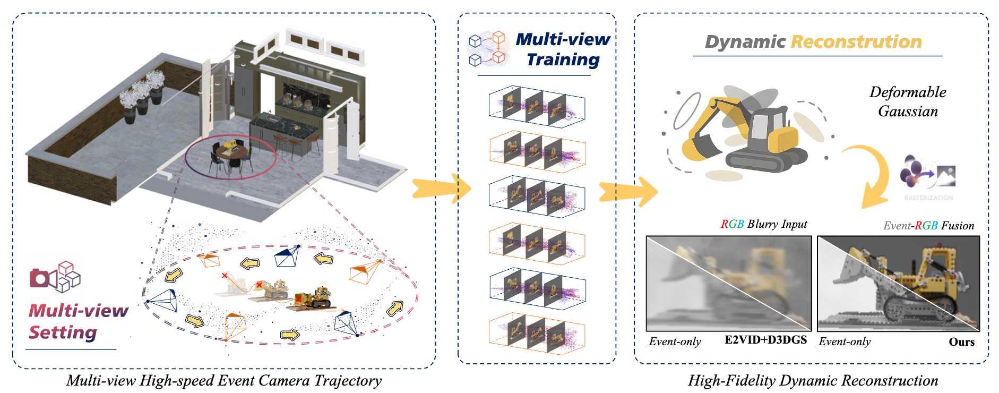

Jianbin Zhao
Undergraduate Student|Dalian University of Technology
📍 Dalian, China
📍 Dalian, China
 GitHub
GitHub
MBTI · ENFP
Bamboo Flute
🍜 Foodie
I am an undergraduate student majoring in Artificial Intelligence at the School of Future Technology, Dalian University of Technology (Class of 2027).
📌 My research interests focus on Generative Models and 3D Vision, with a particular emphasis on Autoregressive Models and 3D/4D Reconstruction. I enjoy exploring how generative frameworks can push the boundaries of visual understanding and creation — both in 2D and 3D worlds.
📌 My research interests focus on Generative Models and 3D Vision, with a particular emphasis on Autoregressive Models and 3D/4D Reconstruction. I enjoy exploring how generative frameworks can push the boundaries of visual understanding and creation — both in 2D and 3D worlds.
🎓 Education
[2023–Now]
📚 Pursuing my B.E. degree in Artificial Intelligence at the School of Future Technology, Dalian University of Technology, Dalian, China.
📰 News
- [2026-02] 🔥 One paper accepted by CVPR 2026: Style-GRPO. Proud to be co-first author!
- [2025-07] ⚡ One paper accepted by ACMMM 2025: E-4DGS.
🗂️ Selected Projects
* Equal Contribution · † Corresponding Author
Generative Model & Autoregressive Model
🎨 Style-GRPO: Semantic-Aware Preference Optimization for Image Style Transfer Guided by Reward Modeling
Built StyleReward-Dataset with 300K preference pairs and end-to-end multimodal reward model StyleScore; solved style leakage & semantic drift via GRPO, achieving SOTA performance.
CVPR 2026
Paper

🤖 DIVA: Dual Distillation for Advancing Visual Autoregressive Models
Proposed DiVA dual distillation framework — data distillation & semantic distillation — to advance visual autoregressive models in T2I tasks, narrowing the gap with diffusion models.
Under Review (ACMMM)

🖼️ Layout-Conditioned Autoregressive Text-to-Image Generation via Structured Masking
Proposed SMARLI framework with structured masking strategy for precise spatial control in autoregressive T2I generation, resolving feature confusion from sparse layout conditions.
Under Review (ECCV 2026)
Paper

3D / 4D Reconstruction
🎬 D²GS: Deblurring Deformable 3D Gaussian Splatting for Motion-Blurred Causal Videos
Proposed D²GS for 4D dynamic scene reconstruction under motion blur, introducing dynamic-static separation and spatiotemporal consistency regularization to achieve SOTA deblurring quality.
Under Review (T-CSVT)

🍿 CoherentGS: Breaking the Vicious Cycle from Sparse and Motion-Blurred Views
A novel framework for coherent 3D Gaussian Splatting from sparse and motion-blurred views using dual-prior strategy with diffusion-driven geometry completion.

⚡ E-4DGS: High-Fidelity Dynamic Reconstruction from the Multi-view Event Cameras
A first event-driven dynamic Gaussian Splatting framework for high-fidelity scene reconstruction with multi-view event cameras in high-speed and varying-lighting conditions.
ACMMM 2025
Paper

🏆 Awards & Honors
- [2025] 🥈 National Silver Award, International College Students Innovation Competition
- [2024] 🏅 Provincial Second Prize, ICAN Innovation & Entrepreneurship Competition
- [2025] 🌟 Outstanding Undergraduate Project, National Experimental Teaching Demonstration Center of Civil Eng. & Hydraulics — "AI-Enabled Urban Flood Detection"
- [2024] 🌱 Provincial College Students Innovation & Entrepreneurship Training Program — "Few-shot Conditional Generation"